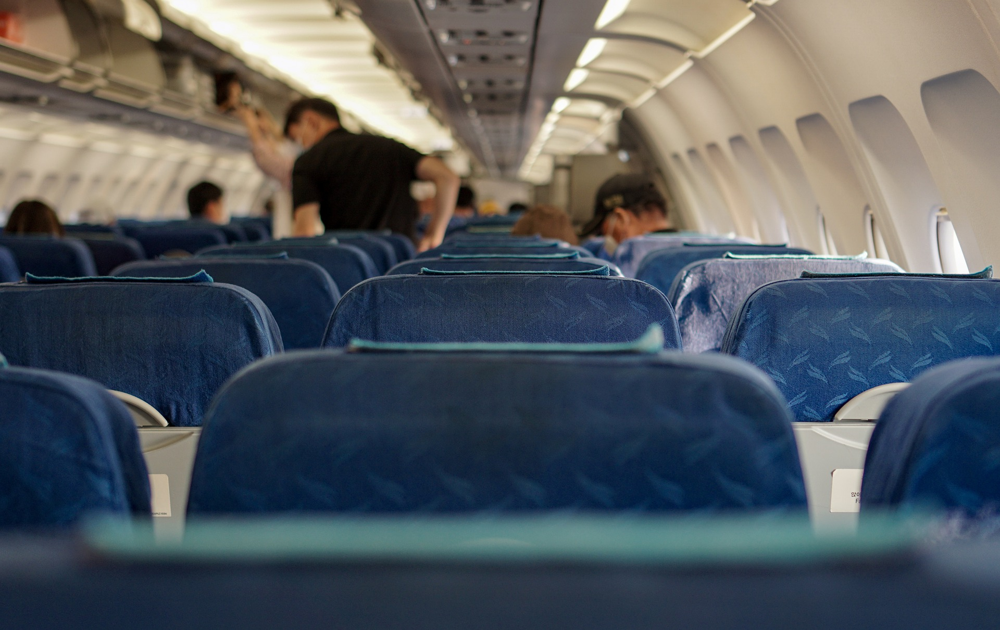
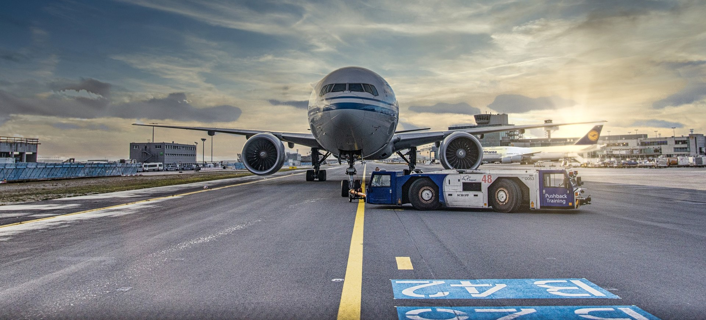
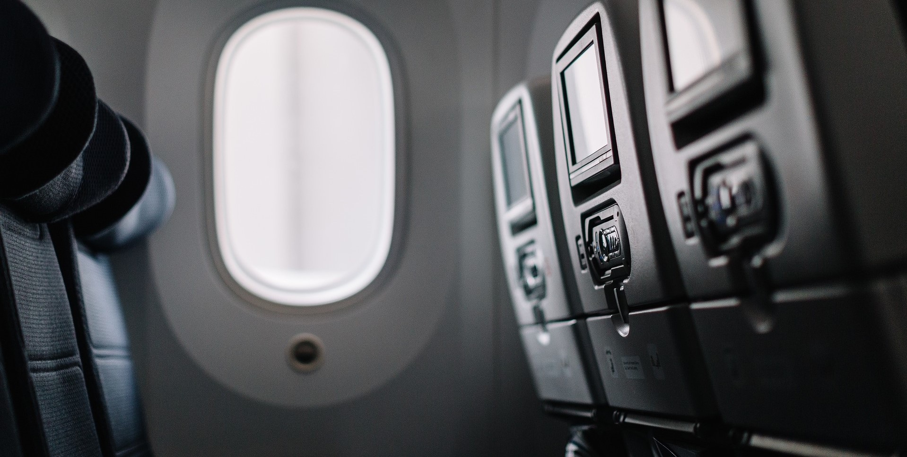

- 
- 
- 
Descubriendo Air Argentina
NUESTRA HISTORIA
Nuestra empresa nace como resultado de la fusión de Alfa, Zonda, Fama y Aeroposta (las denominadas “Air Argentina”) en 1950 siendo la principal compañía de transporte aéreo del país. En los primeros años incorporamos algunas de las aeronaves icónicas de la industria aérea, como el DC-3 y el Comet IV el cual inaugura la “era del jet”, un salto tecnológico que permitiría reducir los tiempos de vuelo a la mitad. Fuimos una de las empresas pioneras en el uso de este tipo de aviones, así como también en la realización de vuelos internacionales de manera directa.
A comienzos de 1965, adquirimos cuatro aviones Boeing 707 para vuelos de largo recorrido. Un año después realizamos el primer vuelo sin escalas entre Buenos Aires y Madrid, en 11 horas y 31 minutos, récord mundial de velocidad para la época.
En 1969 sumamos los primeros Boeing 737 y a mediados de la década del 70 comenzamos a operar el Boeing 747, conocido universalmente como “Jumbo”. Dicho avión realizó el 7 de junio de 1980 el primer vuelo transpolar: salió de Buenos Aires, hizo escala en Río Gallegos, atravesó el Polo Sur y llegó a Auckland, Nueva Zelanda.
A principios de la década del 90’ la empresa fue privatizada, más adelante Austral Líneas Aéreas se une al grupo empresario. En 2008, las cinco empresas que componen el Grupo Aerolíneas vuelven a formar parte del Estado Nacional.
Desde el 2008 hemos realizado una importante renovación de flota e infraestructura general contando, por ejemplo, con un propio centro de instrucción de pilotos (CeFePra) o el nuevo Hangar 5, el más grande de Latinoamérica. Del mismo modo, nos encontramos en un constante proceso de modernización en todas sus aéreas tanto operativas como de servicio al pasajero.
Actualmente contamos con una flota compuesta por aeronaves Embraer 190, Boeing 737-800 y Boeing 737-MAX8, Airbus 330-200 y 340-300. Aerolíneas Argentinas cubre, junto con Austral Líneas Aéreas, una extensa red de destinos domésticos, regionales e internacionales.